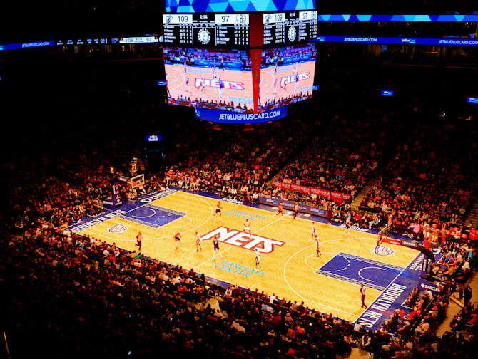

Brooklyn Nets - Os Brooklyn Nets são uma equipe de basquete profissional americana que compete na NBA. Fundada em 1967 como New Jersey Americans na ABA, a franquia mudou-se para Long Island em 1968 e se tornou o New York Nets. Na ABA, conquistaram dois campeonatos (1974 e 1976), com destaque para Julius Erving. Em 1977, após a fusão com a NBA, mudaram para New Jersey e, em 2012, finalmente se estabeleceram em Brooklyn, Nova York, no Barclays Center.
Embora a equipe tenha participado de finais da NBA em 2002 e 2003 com o armador Jason Kidd, ainda busca seu primeiro título da liga. Nos últimos anos, os Nets têm focado em construir um elenco competitivo, incluindo estrelas como Kevin Durant e Kyrie Irving.
Elenco - Ben Simmons (#10), Mikal Bridges (#1), Spencer Dinwiddie (#26), Cameron Johnson (#2), Nic Claxton (#33), Lonnie Walker IV (#4), Dennis Smith Jr. (#8), Darius Bazley (#55).
Títulos NBA - 2 (1974 e 1976)
Títulos Conferência - 2 (2002 e 2003)
Estádio - Barclays Center - (17.732)
